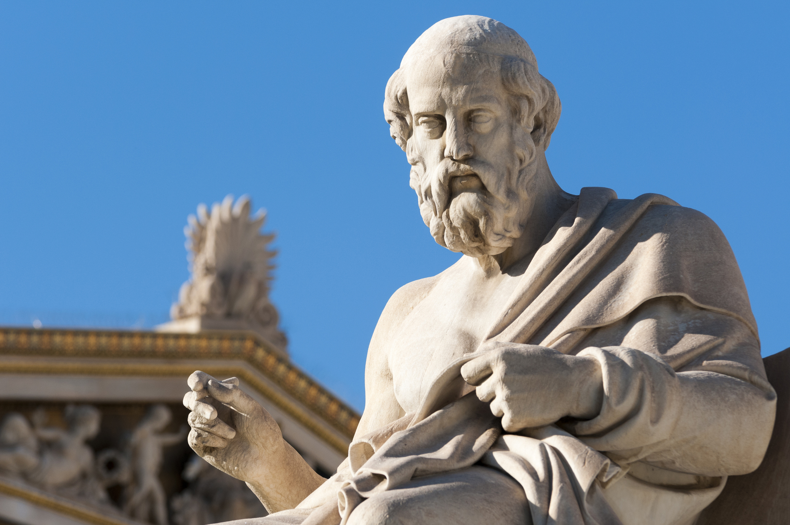

Atlantis


First mentioned by the ancient Greek philosopher Plato around 360 BC, Atlantis stands as the ultimate symbol of a lost paradise. Described as a powerful and advanced utopian empire, it allegedly vanished into the ocean in a single day and night of catastrophe.
The Origin Myth
According to Plato's dialogues *Timaeus* and *Critias*, Atlantis was a massive island located beyond the "Pillars of Heracles" (the Strait of Gibraltar). It was founded by Poseidon, the Greek god of the sea, who created concentric rings of water and land to protect his mortal lover, Cleito.
A Golden Civilization
The Atlanteans built a magnificent civilization with towering temples, advanced naval ports, and grand palaces coated in rare metals like orichalcum. They possessed immense wealth, complex engineering skills, and a powerful military that conquered parts of Europe and Africa.
The Tragic Downfall
- Moral Decay: Over generations, the people of Atlantis became greedy, corrupt, and arrogant, losing their divine, noble nature.
- Divine Punishment: Angered by their wickedness, Zeus summoned the gods to decree a severe punishment for the empire.
- The Cataclysm: Severe earthquakes and floods erupted, causing the entire island to sink beneath the waves, erasing it from history.
Modern Theories
- Philosophical Allegory: Most historians believe Plato invented Atlantis merely as a fictional story to warn about the dangers of hubris and political corruption.
- The Minoan Connection: Some researchers link the myth to the real-world volcanic eruption of Thera (Santorini), which devastated the advanced Minoan civilization around 1600 BC.
- The Eternal Search: Despite lack of physical proof, explorers continue to search for its remains in locations ranging from the Atlantic Ocean to the Mediterranean Sea and even Antarctica.